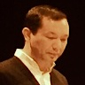

Students
Laura Daly
Laura works as a GIS Specialist & Cartographer at GreenInfo Network in the Bay Area and is passionate about mapping for social and economic justice. She enjoys working on projects that provide a mapped presence for underrepresented groups and has worked on projects based in CA and the US, in Ecuador, and in Kenya.
Vikram Babu - @recordfamous
Product designer, philosophy @codifyit, cassettes @tapefamous, former teacher & Canadia expat.
Abla Hamilton - @abla47
Abla Hamilton is originally from Atlanta, GA and currently resides in Santa Cruz, CA. Currently she is a Senior User Researcher & Designer for a small company called Redbubble. which is an online platform to support artists.
She loves to learn new things and her home is full of her various experiments in different art forms, including blown glass and encaustic paintings.
She hopes that her involvement in the Creative Coding Immersive will help her to bridge the physical with the digital through interactive installations.
Colt Steele - @CoolColtSteele
Colt is a web developer and musician and dog lover and lego builder.
Kaori Furusawa - @KaoriKayote
Originally from Tokyo, Kaori has been residing in California for the past 10 years. Her main profession is manufacturing 3D printers, and design work at Type A Machines (based in San Francisco, CA), while pursuing an Industrial Design degree at California College of the Arts. Kaori has a background in digital fabrication, hand-making shoes, participation at various start-ups, and has a personal interest in integrating creative coding with 3D printing.
Diana Galvis - @DeRousseur
My name is Diana Galvis. I'm a colombian UX / Visual and Interaction designer with a user-centered and design thinking approach. I just received my MFA Design+Tech from the San Francisco Art Institute. I'm now here on OPT visa. Just in case you could help, I'm looking for a job :) I doesn't hurt to ask.
What I think about the most when I work is how my portfolio communicates my intentions to this world. I'm passionate about exploring the possibilities offered by physical computing and telecommunications to influence cultural behavior and create empathic connections between each other and the world around us. I believe one way to foster empathy is providing people with the tools to discover, interpret and interact with different perspectives of truth conveyed in meaningful, engaging experiences and intuitive interfaces that teach awareness of the consequences of our actions.
Mark Hellar - @mhellar

Mark Hellar is a leading technology consultant for cultural institutions throughout the San Francisco Bay Area and beyond and owner of Hellar Studios LLC. Mark specializes in creative yet practical digital media and web-based solutions for multimedia artists and the institutions that support their work, with an emphasis on developing systems and best practices for archiving, documentation and exhibition.
Before opening Hellar Studios LLC in 2009, Mark worked as a systems architect at the Tides Foundation, the academic technology manager at the San Francisco Art Institute and a digital-media specialist at Bay Area Video Coalition. Mark is currently working on new media conservation initiatives at SFMoMA, including the conservation and care of their software-based artworks. He is also developing software for artist Lynn Hershman Leeson and will oversee the installation of her upcoming retrospective at the ZKM Center for Art and Media in Karlsruhe, Germany at the end of 2014.
Mark is an advisory committee member for the Digital Repository for Museum Collections at MoMA and has presented on the conservation of software-based artworks at Harvard University, the Smithsonian Institute, DOCAM research alliance and the American Institute of Conservation.
Jason Rasmussen - @jasonrasputan
I am currently working with everything from interactive media and creative coding to conceptual sculpture and performance. Displacement of context is the setting for the storyline in my works. In front of the backdrop and on a floor of memory, objects become characters that play out something created all on their own. They sing songs in which the words all rhyme but fall out of rhythm. I am interested in telling stories through objects and design. I find my theater of inspiration in department stores. All the clorox bottles act out a drama with the sponges as do the fruits and the pasteurized juice concentrate in the nearby refrigerated section. Part of my life has always been influenced by commercialization and design. I find that to design is human, but to error is nature. In this context I tell stories about nature and design.
Charles-Antoine Perrault - @ca_perrault
Educated as an urban designer and planner, I worked at Situ Studio in New York over the last two years on “Forensic Architecture”, a project exploring the role of architectural visualization and spatial analysis in contemporary international legal procedures. This project investigated a series of case studies to produce a wide range of visuals including diagrams, maps, animations, and interactive reports that were used by the UN and other NGOs to shed a new light on intricate human rights issues. I recently relocated to the Bay Area and I am pursuing work at the intersection of social entrepreneurship, technology, and design. I am especially interested in continuing developing more sophisticated interactive maps and spatial analysis tools and in learning new data visualization techniques.
Kaitlin Yap - @kaitlinyap
Hi, I’m Kaitlin -- but everyone calls me Yap. I moved from from NYC to SF this year; the mild winter and excellent burritos have helped the transition.
I’m currently an Executive Producer on a Human Interface design team. During the past decade, I’ve worked across the technology and marketing/media industries with brands such as Google, Vogue and Nike.
I love art, design, photography, news, ice cream, and traveling abroad any chance I get. You can find me at kaitlinyap.com / @kaitlinyap on just about everything.
Taurin Barrera - @myspacebooktube
Taurin Barrera is an electronic musician and new media artist whose work explores the interactive connections between technology and perception. Taurin incorporates computer vision, data visualization, and electroacoustic composition techniques to program audiovisual instruments and installations. He leverages creative technologies to compose sounds and music you can see, and images you can hear. Taurin recently received an MFA in Electronic Music & Recording Media from Mills College, where he studied with Fred Frith, Pauline Oliveros, and Laetitia Sonami. While at Mills, Taurin developed interactive software and environments to foster creative and playful exploration of digital media.
Kristin Henry - @KristinHenry
Kristin Henry is a generative artist and computer scientist, specializing in Science and Data Visualization. Early works include an animation of the molecular biology of HIV, and a neuromuscular junction simulation. Moving from animations of biological systems, to computationally generated visualizations, recent works have included exploring the frequencies of amino acids in various proteins and developing color patterns from them.
Living in San Francisco during the AIDS epidemic had a profound impact on her, and led her to pursue studies in Biology and Physical Anthropology. While working with an AIDS educator in New Mexico, she discovered the power of visual storytelling.
Paolo Salvagione - @salvagione
Paolo Salvagione is an artist who works at the intersection of engineering, participation, and levity.
He was born in Chicago and at an early age moved with his family to Southern France, where he developed an affection for bullfighting. He spent his teen years in Albuquerque, New Mexico, living around the corner from Joel-Peter Witkin, whom he occasionally assisted with set construction and corpse transportation. He spent his college years in Manhattan reading philosophy.
Grounded in the practice of thinking about thinking about things, he spent a half a decade circling the world setting up bicycle factories from Italy to Indonesia — mastering titanium fabrication after hours at Martin Marietta in Colorado, working on next-generation paint-application systems for Boeing, employing CAD software for hi-tech bike design in Marin, even designing an atmospheric-dust collection tool for NASA. And he has worked, for over a decade, as lead engineer on the 10000 Year Clock of the Long Now Foundation.
In his art, Salvagione has sent his studio visitors out one second-story window and in another on a 900-pound steel wheel. He has used a laser cutter to give negative space a razor-sharp edge, creating a frozen bellows of light. He has filled a World War I gymnasium with a mix of pure geometry and pure fun in the form of ten oversized swings, with the implicit suggestion that visitors compete. He has commented on the role of finance in the art market by selling uncut currency presented in a fetishized box, including a pair of paper sheers. And he has pushed kinetic sculpture past what the eye perceives as sufficiently balanced.
He is an autodidact by trade and yet, as the son of a printmaker and the grandson of a sculptor and of an architect, very much an artist schooled in tradition. All his works balance humor and craftsmanship, the novel and the banal, the tactile and the conceptual.
Scott Killdal - @kildall
Scott Kildall is cross-disciplinary artist who combines networked performance and algorithms to make art works that invite public participation.
His work has been exhibited internationally at venues including the New York Hall of Science, Transmediale (Berlin), the Venice Bienale (Internet Pavilion), Furtherfield (London) and the San Jose Museum of Art.
He has received fellowships, awards and residencies from organizations including Recology San Francisco (2011), Turbulence.org (2010, 2009), Eyebeam Art + Technology Center (2009), Kala Art Institute (2007) and The Banff Centre for the Arts (2009, 2006) and Autodesk (2013).
He worked at the Exploratorium as a New Media Exhibit Developer (2012-13) and collaborated with scientists to build interactive exhibits for the Life Sciences department, using various data-visualization techniques.
He is currently an artist-in-residence at Autodesk. He resides in San Francisco.